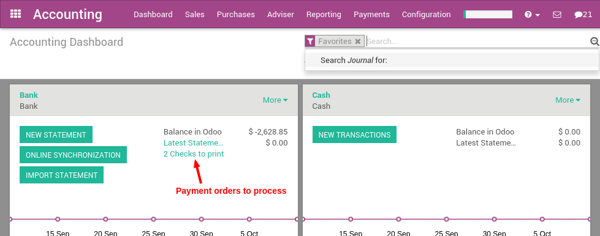

Once vendor bills are registered in Odoo, you can easily pay vendors for the correct amount and at the right time (not too late, not too early; depending on your vendor policy). Odoo also offers reports to track your aged payable balances.
If you want to control vendor bills received from your vendors, you can use the Odoo Purchase application that allows you to control and pre-complete them automatically based on past purchase orders.
From Vendor Bill to Payment
Record a new vendor bill
When a vendor bill is received, you can record it from in the Accounting application. As a shortcut, you can also use the New Bill feature on the accounting dashboard.

To register a new vendor bill, start by selecting a vendor and inputting their invoice as the Vendor Reference, then add and confirm the product lines, making sure to have the right product quantities, taxes and prices.

Save the invoice to update the pre tax and tax amounts at the bottom of the screen. You will most likely need to configure the prices of your products without taxes as Odoo will compute the tax for you.
Примечание
On the bottom left corner, Odoo shows a summary table of all taxes on the vendor bill. In several countries, different methods are accepted to round the totals (round per line, or round globally). The default rounding method in Odoo is to round the final prices per line (as you may have different taxes per product. E.g. Alcohol and cigarettes). However if your vendor has a different tax amount on their bill, you can change the amount in the bottom left table to adjust and match.
Validate The Vendor Bill
Once the vendor bill is validated, a journal entry will be generated based on the configuration on the invoice. This journal entry may differ depending on the the accounting package you choose to use.
For most European countries, the journal entry will use the following accounts:
- Accounts Payable: defined on the vendor form
- Taxes: defined on the products and per line
- Expenses: defined on the line item product used
For Anglo-Saxon (US) accounting, the journal entry will use the following accounts:
- Accounts Payable: defined on the vendor form
- Taxes: defined on the products and per line
- Goods Received: defined on the product form
You can check your Profit & Loss or the Balance Sheet reports after having validated a couple of vendor bills to see the impact on your general ledger.
Pay a bill
To create a payment for an open vendor bill directly, you can click on Register a Payment at the top of the form.
From there, you select the payment method (i.e. Checking account, credit card, check, etc…) and the amount you wish to pay. By default, Odoo will propose the entire remaining balance on the bill for payment. In the memo field, we recommend you set the vendor invoice number as a reference (Odoo will auto fill this field from the from the vendor bill if set it correctly).
Примечание
You can also register a payment to a vendor directly without applying it to a vendor bill. To do that, . Then, from the vendor bill you will be able to reconcile this payment with directly.
Printing vendor Checks
If you choose to pay your vendor bills by check, Odoo offers a method to do so directly from your vendor payments within Odoo. Whether you do so on a daily basis or prefer to do so at the end of the week, you can print in checks in batches.
If you have checks to print, Odoo's accounting dashboard acts as a to do list and reminds you of how many checks you have left to be printed.
By selecting the amount of checks to be printed, you can dive right into a list of all payments that are ready to be processed.
Select all the checks you wish to print (use the first checkbox to select them all) and set the action to Print Checks. Odoo will ask you to set the next check number in the sequence and will then print all the checks at once.
Reporting
Aged payable balance
In order to get a list of open vendor bills and their related due dates, you can use the Aged Payable report, under the reporting menu, (in ) to get a visual of all of your outstanding bills.

From here, you can click directly on a vendors name to open up the details of all outstanding bills and the amounts due, or you can annotate any line for managements information. At any point in time while you're looking through the report, you can print directly to Excel or PDF and get exactly what you see on the screen.